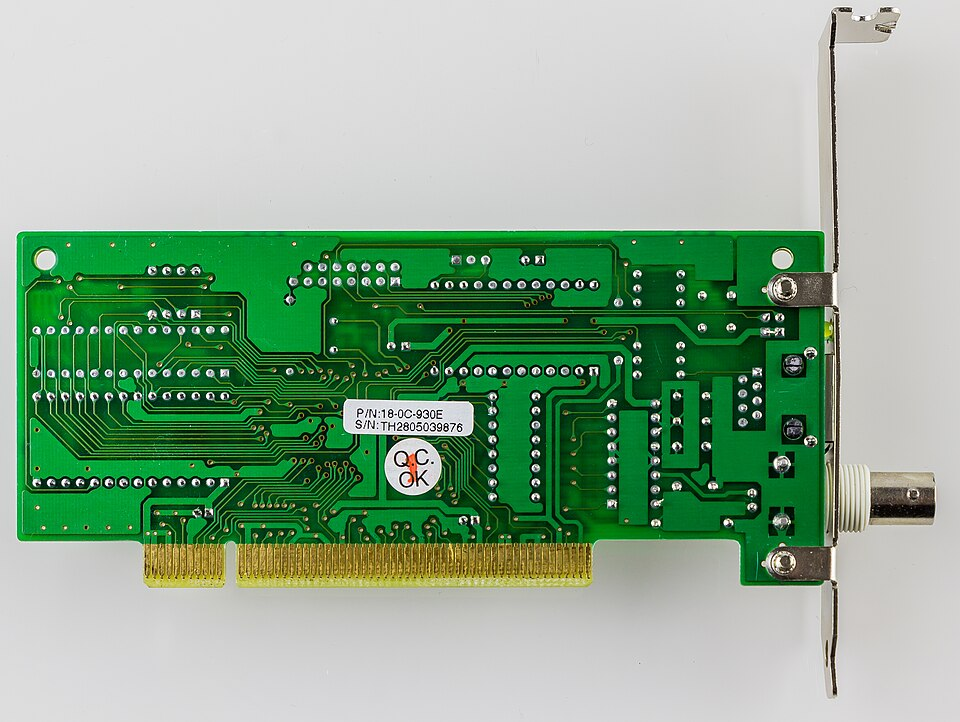
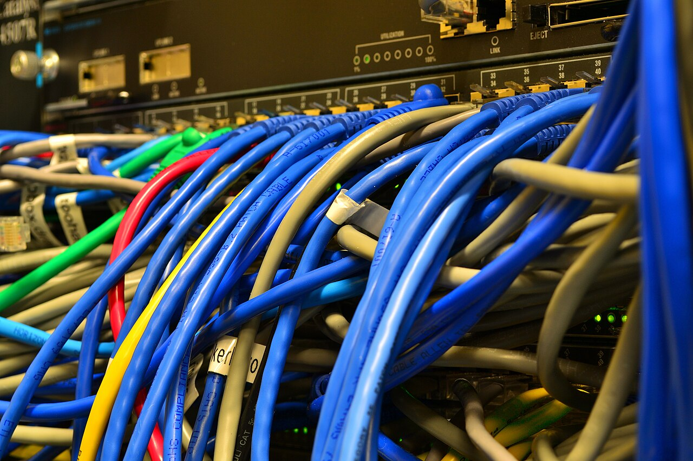
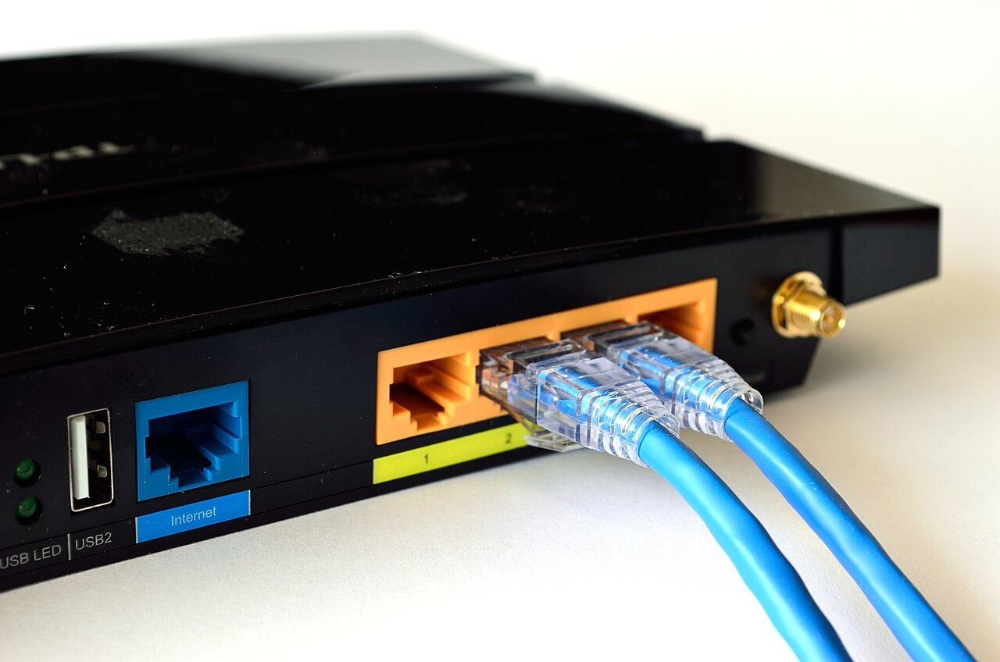
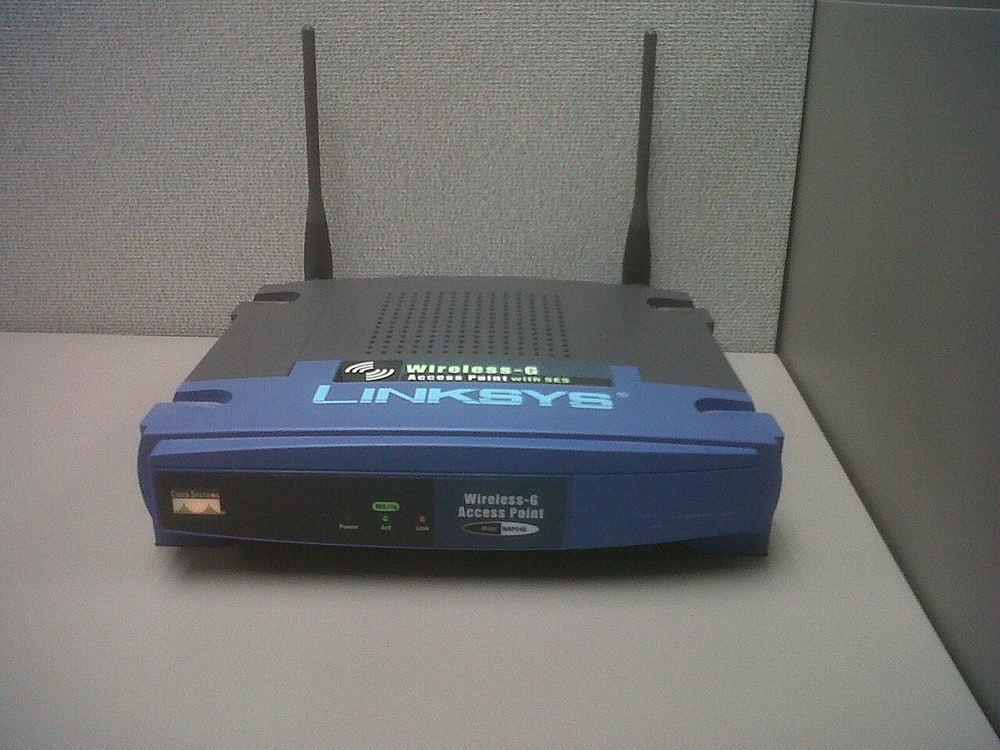
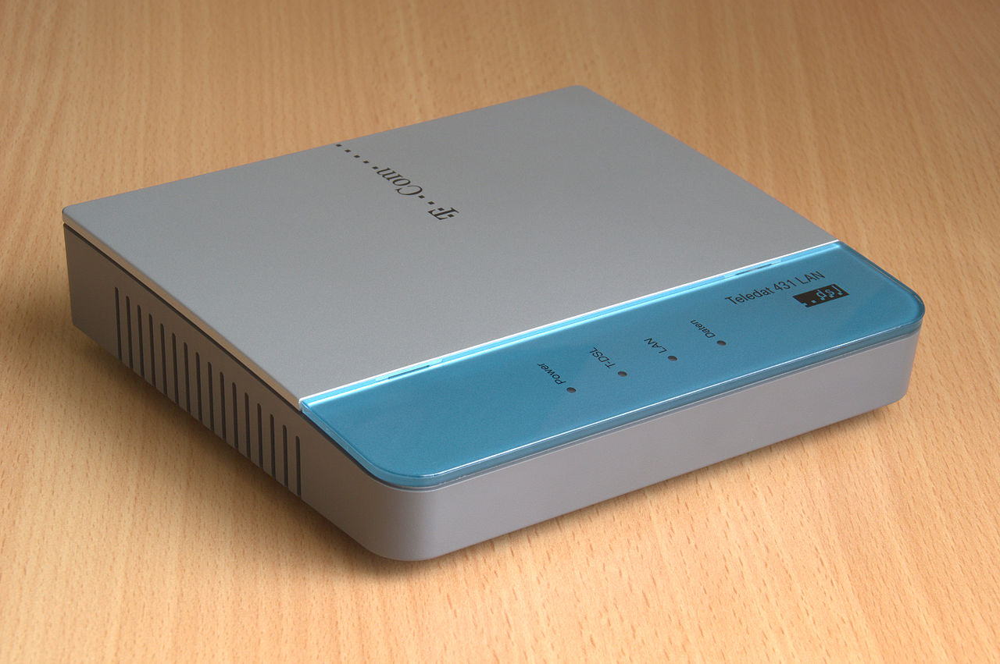

Local Area Network
局部區域網絡（LAN）
- 覆蓋較小的地理範圍，例如同一學校、辦公室或家居。
- 通常由同一機構管理網絡設備及存取權限。
- 可讓裝置共享檔案、打印機和互聯網連線。
01 · Network scale
Local Area Network
Wide Area Network
即時判斷
02 · Network services
作答時不要只寫「方便」。應指出所傳送或共享的資源，以及如何滿足題目情境。
教師可透過校內訊息系統傳送通告，減少紙張並讓訊息迅速送到多名使用者。
答題詞：訊息、即時、多名使用者不同地點的參與者可即時傳送聲音及影像，進行遙距課堂或會議。
答題詞：即時、聲音／影像、不同地點多部電腦可共用網絡打印機、檔案及互聯網連線，減少重複購置設備。
答題詞：共用、集中存取、成本03 · Real hardware
外觀會因品牌和型號而不同，考試答案應以功能為準。按卡片查看可取分的完整句式。

NIC
讓電腦或其他裝置接入網絡，並傳送和接收網絡數據。
UTP cable
在 LAN 中形成有線通訊鏈路，連接電腦、交換器等設備。

Switch
連接同一 LAN 內多部有線裝置，並把訊框轉送至合適連接埠。

Router
連接不同網絡，按目的地 IP 位址把封包轉送至合適路徑。

Wireless AP
利用無線電訊號，讓 Wi-Fi 裝置接入有線 LAN。

Modem
按通訊線路需要調變及解調訊號，使數據可經服務供應商的線路傳輸。
04 · Communication links
HKDSE 常把需要放進情境。請同時考慮速度、成本、安全性及可用性，而不是背誦單一「最佳」答案。
Unshielded twisted pair
常用於建築物內的 Ethernet LAN，鋪設成本較低，但距離及抗干擾能力不及光纖。
同一方法的實際表現會受服務計劃、覆蓋和用戶量影響；以下是情境比較的起點。
05 · Original DSE-style practice
某中學更新圖書館網絡。30 部桌面電腦以網絡線連接；60 部平板電腦需要無線連線；所有裝置均要使用校內檔案服務及互聯網。
(a) 指出裝置 X 及裝置 Y。
[2 分]X：路由器，負責連接校內 LAN 和互聯網。（1）
Y：交換器，連接同一 LAN 內多部有線裝置。（1）
(b) 解釋每部桌面電腦為何需要網絡介面卡。
[1 分]NIC 為桌面電腦提供網絡介面，使電腦能經網絡線傳送及接收數據。（1）
(c) 說明使用無線接達點連接平板電腦的兩項好處。
[2 分]每項合理好處 1 分，例如：
(d) 圖書館經常舉行大型視像會議。比較光纖和流動網絡，建議較合適的主要互聯網連接方法，並從速度、穩定性或可用性說明兩項理由。
[3 分]建議光纖（1），合理比較理由每項 1 分，例如：
答案須把所選方法和題目中的大型視像會議需要連結；只寫「較好／較快」不足以完整解釋。
Before you leave
交換器、家居路由器及 UTP 線：Raysonho，CC0；無線接達點：Pjpearce，CC0；ADSL 數據機：Tors，CC0。網絡介面卡：© Raimond Spekking / CC BY-SA 4.0（via Wikimedia Commons）。完整記錄見 圖片資料檔。